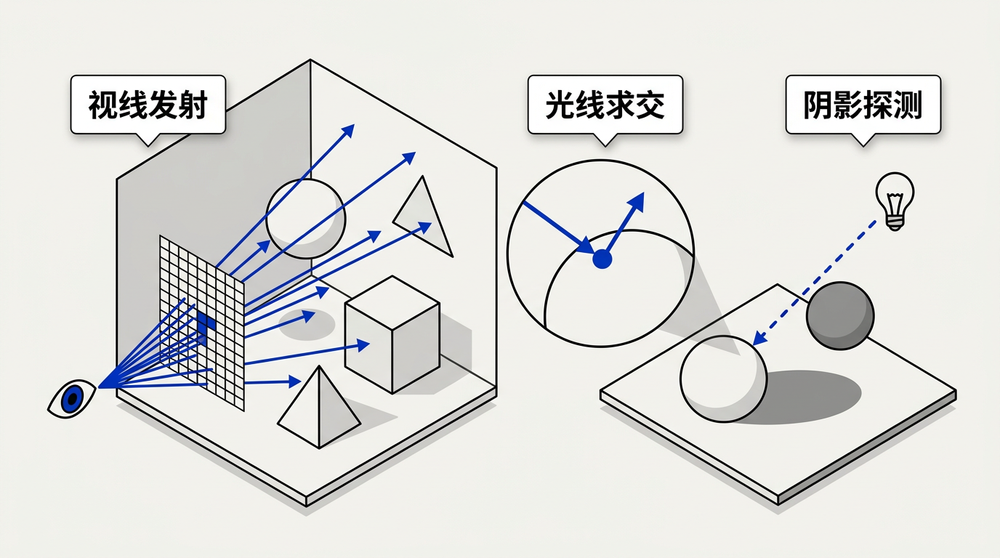
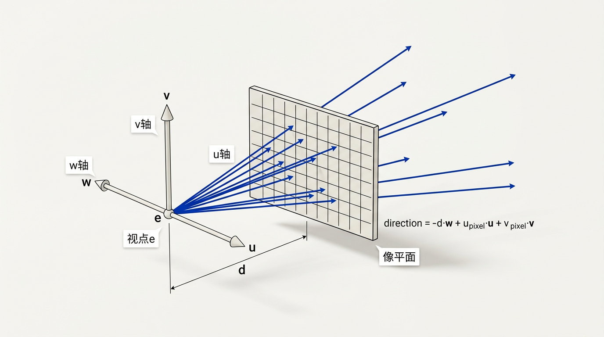
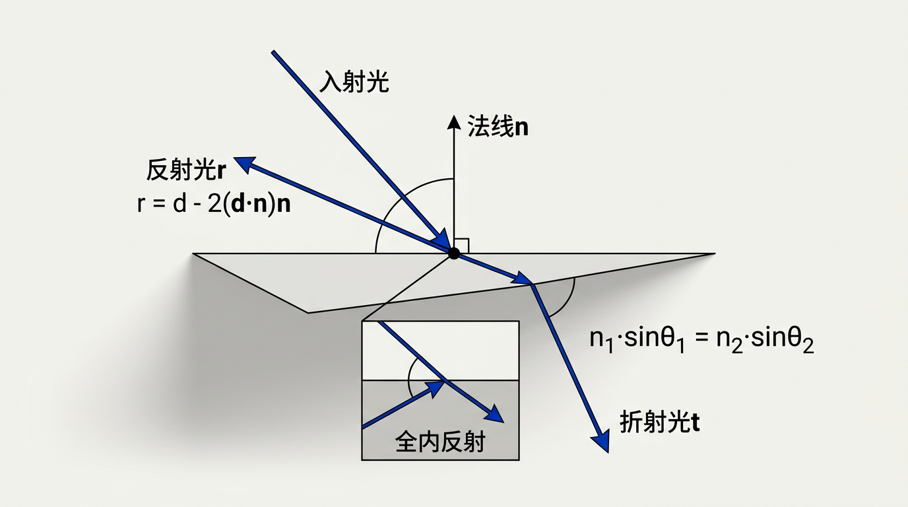

本讲义基于 Steve Marschner & Peter Shirley 所著《虎书》（Fundamentals of Computer Graphics）第5版第4章（p.96-113）光线追踪。
光线追踪是物理真实感渲染的基础。本章涵盖基本算法、视点与摄像机框架、光线-物体求交、光照与阴影探测、反射折射、加速结构（BVH/均匀网格）入门。
本版插画采用 Guizang 材质插画风格重新绘制。
学习目标

光线追踪（ray tracing）是计算机图形学中生成图像的基本方法之一。与光栅化（将几何体投影到屏幕空间后逐片元着色）不同，光线追踪模拟光线在场景中的物理传播过程——但方向是反过来的：从眼睛出发，穿过像素，进入场景。这种"反向追踪"完全出于效率考量：光源向四面八方发射的光线中，只有极少一部分最终射入观察者的眼睛。从眼睛反向追踪，可以确保我们只计算那些"真正进入眼睛"的光线。本章从零开始，建立光线追踪的核心算法框架——涵盖光线生成、求交、着色、阴影、反射、折射、实例化以及加速结构，为理解 Whitted 风格递归光线追踪器和现代路径追踪器奠定基础。
一个基本的光线追踪器由三个紧密协作的阶段组成：光线生成（ray generation），基于摄像机几何计算每条"观察光线"的原点和方向；光线求交（ray intersection），找到该光线与场景中物体的第一个交点（即"最近命中"）；以及着色（shading），基于命中点的几何信息、表面材质和场景光源，计算该像素的最终颜色。这三个步骤构成了一个嵌套的双重循环：外层遍历所有像素，内层遍历所有物体。
想一想：光线为什么从眼睛出发而不是从光源出发？
不妨做个小实验——你站在房间里，天花板上挂着一盏灯。从这盏灯出发的光线有多少条最终打在了你眼睛上？可能的答案是：一百万条中只有几条。如果从光源出发追踪每一条光线，99.999%的计算都被浪费在"永远不会被看到"的光线上。这就是光可逆原理的精髓：光在真空中沿直线传播时，路径可逆。从眼睛反向追踪，等于在"无限多可能方向"中精确挑出恰好穿过像素中心的那个方向——就像筛子一样，只保留有用的。这正是光线追踪效率的根本来源。
生活类比：闭眼扔豆子 vs 睁眼找东西。 从光源追踪光线，就像把一包豆子撒向整个房间，然后逐一检查哪些豆子正好掉进了相机的镜头里——绝大多数都是白费力气。从眼睛反向追踪，相当于站在相机的位置，一根一根地伸出探针，问"在这个方向上我看到了什么？"——每根探针都物有所值。
基本光线追踪算法的伪代码清晰地呈现了这个双重循环结构：
for each pixel (i, j) in image:
compute viewing ray p(t) = e + t·d
find first object hit by ray → HitRecord(t, point, normal, material)
set pixel color to value computed from hit point, light, and normal
每行伪代码背后都是整套子系统的浓缩：第一行对应摄像机模型（第 4.2-4.3 节），决定光线从哪出发、往哪走；第二行对应求交引擎（第 4.4 节），要高效地在数百万个三角形中找到最近命中；第三行对应着色管线（第 4.5-4.7 节），要结合光源、阴影射线、反射和折射来计算颜色。这三个子系统各自都有丰富的细节和设计决策，下文中我们逐层拆开。
在物理世界中，远处的物体投影到视网膜（或相机底片）上的像确实更小。这一现象可以用线性透视（linear perspective）精确建模——一种几何投影系统，其核心特征是：所有从场景出发的光线汇聚到同一个点——视点（viewpoint），也就是观察者眼睛（或者相机针孔）所在的位置。视点前方的像平面（image plane）相当于一张画布，每条视线先穿过像素中心，再继续飞入场景。
想一想：透视投影为什么"近大远小"？
答案藏在简单的相似三角形中。假设像平面位于视点前方距离 d 处，场景中有一个高度为 H 的物体位于距离视点 D 处。在像平面上，该物体的投影高度为 h。根据相似三角形，h/H = d/D，因此 h = H·d/D。关键观察：投影高度 h 与物体距离 D 成反比——距离加倍，投影高度减半。这就是透视缩短（foreshortening）的数学本质。它不是某个神秘的"效果"，而是三维光线几何的自然结果。
生活类比：透过窗户看风景。 站在窗边，你看到近处的大树遮住了远处的山峰。如果你把窗户当成像平面——在窗玻璃上描出树的轮廓和山的轮廓——你会发现树比山大得多，即使现实中山要大上千万倍。窗户就是像平面，你的眼睛就是视点。光线穿过"窗上树的位置"和"窗上山的位置"，到达你的眼睛。树更近，因而它在窗上"占据"的角度更大。这就是透视的全部秘密——角度大小决定成像大小。
透视投影还有一个优雅的性质：消失点（vanishing points）。三维空间中一组彼此平行的直线，如果它们不与像平面平行，那么在透视图像中这些直线会汇聚于像平面上的同一个点。典型的例子是：铁轨的两条钢轨在远方"碰在一起"，公路两边的路灯越远靠得越近。消失点在数学上对应齐次坐标中"无穷远点"的投影（详见第 7 章），但在直觉层面，它只是几何光线汇聚的可视化结果。如果平行线恰好与像平面平行，它们就不会汇聚——所有水平线保持水平，所有竖直线保持竖直。
在计算机图形学中，光栅化管线把透视投影编码为一个 4×4 的透视矩阵乘法和齐次除法（第 7 章）。但在光线追踪中，我们根本不构造显式的透视矩阵——透视"自动"出现在光线生成的方式中：每个像素的光线方向不同，中心像素指向正前方，边缘像素指向侧面。这种"每条光线独立方向"的机制天然地产生了正确的近大远小。
在开始追踪光线之前，我们需要精确地定义"摄像机"——光线从哪出发、往哪走。第 2 章引入的摄像机框架（camera frame）正好派上用场：视点 e 是眼睛的三维位置，三个正交单位向量 u、v、w 构成一个右手局部坐标系。其中 w = −look_direction，指向摄像机"看到"的反方向（即从场景指向摄像机的方向）；u 指向摄像机的"右侧"；v 指向"上方"。这三者共同定义了一个原点位于 e 的坐标系，就像摄像机的内置导航仪。

生活类比：头戴 GoPro。 e（视点）是 GoPro 在空间中的位置（你头上的坐标）。w 是 GoPro 的镜头指向的"反方向"——即你背后那个方向。u 是你耳朵连线的方向（"右"），v 是你头顶的方向（"上"）。这三个向量一起随时告诉你"相机在哪、对着哪、怎么样算正立"。足球运动员头上的摄像头之所以能稳稳地拍出水平画面，靠的就是类似的坐标系标定。
在正交投影（orthographic projection）中，所有观察光线都是平行的，方向统一为 −w（即所有光线都径直指向 w 的反方向——也就是直接朝场景深处射去）。像平面上每个像素 (i,j) 对应一个不同的光线出发点（都在像平面上），但方向完全相同。所以物体的大小不随深度变化——平行线在正交投影中保持平行。这听起来不像真实世界，但在工程制图、CAD 设计、策略游戏的小地图俯视图以及等距像素艺术中非常有用。
u_offset = s · (i − n_x/2) · u v_offset = s · (j − n_y/2) · v ray_origin = e + u_offset + v_offset ray_direction = −w
其中 s 是像素在像平面上的物理尺寸，n_x 和 n_y 是水平和垂直方向的像素数量。本质上，正交投影是在像平面上均匀采样起点，然后向同一方向发射。
在透视投影（perspective projection）中，所有光线从同一个视点 e 出发，向不同的方向扇形散开，每条光线穿过像平面上的对应像素中心。这是人眼和真实相机的工作方式。假设图像有 n_x × n_y 个像素，像平面放置在视点前方距离 d 处（d 通常取 1，对应"焦平面在 z = -1"的约定），物理宽度为 W，高度为 H。那么像素 (i,j)（行列索引从 0 开始）对应的光线方向通过像平面上的点 (u_pixel, v_pixel) 来参数化：
u_pixel = −W/2 + W · (i + 0.5) / n_x v_pixel = −H/2 + H · (j + 0.5) / n_y direction = d · w + u_pixel · u + v_pixel · v ray = e + t · normalize(direction), t > 0
这里 (i+0.5) 和 (j+0.5) 使用了像素中心采样约定（第 3.2 节），确保每条光线恰好穿过像素的正中心而非角落。像平面物理尺寸 W 和 H 与水平视场角（field of view，FOV）θ 之间的关系为：
tan(θ/2) = (W/2) / d
这是工业界和学术界通用的接口参数——比起直接设定像平面宽度，说"水平视场角 90°"对摄影师和游戏开发者来说更直观。
想一想：正交投影和透视投影的核心区别是什么？
核心区别在于光线出发点和光线方向两个维度。正交：出发点不同（在像平面上均匀排布），方向全部相同（平行）。透视：出发点完全相同（都在 e），方向不同（扇形展开）。这个区别决定了：正交下物体大小不随深度变化（无近大远小），透视下物体大小随距离反比缩放。工程制图用正交（因为要量尺寸），游戏摄影用透视（因为要"好看"）。不存在"哪个更好"——只有"哪个更适合当前目的"。
光线追踪的计算核心——也是整条管线中计算量最大的环节——是求解光线与场景中所有物体之间的交点。光线由其参数方程给出：
p(t) = o + t·d, t > 0
其中 o 是光线原点（向量），d 是方向向量（通常归一化为单位长度），t 是沿着光线方向从原点出发测得的正实参数。求交任务可以简洁地表述为：在所有满足 t > 0 且 p(t) 落在某个物体表面的解中，找到最小的 t——即"最近命中"。
球体是最简单的曲面几何体，也是光线追踪器中最常使用的"调试形状"——因为它的求交有一个紧凑的解析解。以原点为中心、半径为 R 的球体的隐式方程为：
x² + y² + z² − R² = 0 或 |p|² − R² = 0
将光线方程 p = o + t·d 代入：
|o + t·d|² − R² = 0 |d|² · t² + 2(o·d) · t + |o|² − R² = 0
这是一个标准的关于 t 的一元二次方程。设系数：
a = |d|² b = 2(o·d) c = |o|² − R² 判别式 D = b² − 4ac
想一想：判别式 D>0、D=0、D<0 的几何意义分别是什么？
判别式 D 就像是猎人的测距仪。D<0：二次方程无实数解——光线完全错过了球体（光线与球面不相交），就像子弹从球旁边擦过。D=0：有一个重根——光线恰好与球面相切，就像子弹擦着球皮飞过。这种"恰好相切"的情形在实际浮点运算中极为罕见，但在数学上是光线-球体关系的分界线。D>0：有两个不同的实数根 t₁ 和 t₂——光线贯穿球体。t₁（较小的根）是光线进入球体的交点（入射点），t₂（较大的根）是光线穿出球体的交点（出射点）。我们取最小的正 t 值（通常是 t₁）作为命中点。如果 t₁ 为负而 t₂ 为正，说明光线起点在球体内——这在处理折射光线（从玻璃内部穿出）时很常见。
t = (−b ± √D) / (2a)
生活类比：子弹穿过西瓜。 t₁ 是子弹进入西瓜皮的时刻，t₂ 是子弹从另一侧穿出的时刻。如果你在西瓜外面开枪（光线从外部射来），最近命中是 t₁。如果你站在西瓜里面往外开枪（光线从内部射出），最近命中是 t₂（t₁ 是负的，因为它在身后）。判别式 D 告诉你子弹会不会碰到西瓜——D<0 意味着子弹完全打偏了。
对于以原点为球心的球，命中点处的表面法线极其简单：n = p/|p| = p/R——法线就是从球心指向表面点的径向向量。对于任意位置（球心为 c）的球体，将光线原点偏移：o' = o − c，然后在局部坐标中求交，交点再转换回世界空间。这体现了实例化（第 4.8 节）中"变换光线而非变换物体"的普遍原理。
三角形是 3D 图形学中最基础的几何基元——所有多边形网格最终都由三角形组成。光线与三角形的求交通常分两步：先求光线与三角形所在平面的交点，再检验该交点是否位于三角形内部。三角形所在平面由法向量 n = (b−a)×(c−a) 和任意顶点（如 a）定义。平面方程为 n·(p−a) = 0。将光线方程代入：
n·(o + t·d − a) = 0 → t = n·(a − o) / (n·d)
若分母 n·d ≈ 0，则光线与平面平行——要么永不相交（如果偏移不为零），要么无穷多解（如果整条光线在平面上）。得到 t 后，验证 t > ε（ε 是微小正值，防止自交浮点误差），然后使用第 2.9.1 节的重心坐标法：交点 p 表示为三角形顶点 a、b、c 的加权组合：p = α·a + β·b + γ·c，其中 α+β+γ=1 且 α,β,γ ≥ 0（严格为正表示交点在内部）。重心坐标还给出了法线、纹理坐标等顶点属性的插值——三个系数恰好就是三个顶点在交点上的"影响力"。
想一想：为什么三角形求交是图形学的核心？
三角形有两个不可替代的性质：（1）三个点总是共面——不需要显式定义平面方程，任何三个不共线的点自动定义一个平面；（2）三角形内部的重心坐标是线性插值——纹理坐标、法线、颜色这些属性可以在三角形内部被唯一且平滑地插值。把球体、茶壶、人脸三角剖分成成千上万个小三角形后，任何光线与复杂曲面的求交都分解为一连串的"光线 vs 三角形"测试。三角形是"万能基元"——足够简单（每条光线用几十次浮点运算就能完成求交），又足够灵活（可以逼近任意形状）。
实践中，高度优化的算法——Möller-Trumbore 算法——将"求平面交点"与"重心坐标判定"合并为一步直接计算，避免先求平面法线再判定的冗余开销。该算法的核心是将三角形的一条边（如 b−a 和 c−a）与光线方向组合成一个 3×3 线性系统，用克拉默法则同时求解 t、β 和 γ：
o + t·d = a + β·(b−a) + γ·(c−a) → [−d, b−a, c−a] · [t, β, γ]ᵀ = o − a
求解得到 t（光线参数）、β 和 γ（重心坐标的两个独立分量），α = 1−β−γ。高效实现利用了标量三重积对体积的优雅公式，整段代码只需几十次乘加运算。
将求交逻辑实现为软件代码时，面向对象的设计非常自然。核心接口包括一个抽象的 Surface 基类和一个 HitRecord 结构体：
class Surface
HitRecord hit(Ray r, real t0, real t1)
struct HitRecord
real t // 光线到达命中点的参数
Vec3 point // 命中点的世界坐标
Vec3 normal // 命中点处的表面法线
Material* material // 指向表面材质的指针
t0 和 t1 参数定义了在光线上的有效搜索区间。对于原始（相机）光线，t0 通常设为微小正数 ε（如 0.001）以避免自交（shadow acne——由于浮点精度导致光线"穿过"发射表面本身），t1 设为无穷大。对于阴影射线（第 4.6 节），只需要知道"有没有遮挡物"，因此使用 shadow_hit(t0, t_light) 可以提前终止搜索——一旦在 t < t_light 处找到任何命中，立即返回 true，无需继续费心找到"最近的"命中。
每个物体子类（球体、三角形、三角形网格等）实现自己的 hit 方法，内部包含针对该几何类型的专门数学。球体使用二次公式，三角形使用重心坐标，网格则遍历其子对象列表并持续追踪最近的命中。这种多态设计构成了第 12 章中更复杂加速结构的基础。
实际场景包含成千上万甚至数百万个三角形。如果每条光线都要逐个测试场景中的每一个物体，复杂度为 O(N)，其中 N 是物体数量。乘以 P 个像素，总渲染时间为 O(N·P)——这是个不可接受的暴增。即使是一个只有几十万三角形的简单室内场景，在 1080p 分辨率下，这已经是无法完成的计算。
想一想：为什么光线追踪需要"加速结构"？
遍历场景中的每个物体去测试一条光线，就像你想在电话簿中找一个姓"张"的人，结果从第一页开始逐页翻——不管这本电话簿有没有按字母排序。光线追踪的诀窍在于：利用空间连贯性——如果光线没有穿过客厅，那它就没有必要去检查客厅里的每一把椅子、每一盏灯。加速结构的作用，就是把"遍历所有物体"转化为"只检查光线实际穿过的空间区域内的物体"。本质是用预处理（构建加速结构的时间）换取渲染时每条光线的加速。
大部分光线追踪工程的核心工作就是降低从 O(N) 到 O(log N) 的每条光线复杂度——借助加速结构（acceleration structures），如包围体层次（BVH）或均匀空间细分网格。这些结构预先将物体组织成分层或分区的空间组，使每条光线仅需测试极少数"可能相关"的物体。第 4.9 节和第 12 章将详细展开。在本章的剩余部分，我们假设存在一个黑盒函数可以高效地找到沿给定光线的最近命中——专注于光线追踪的"上层建筑"。
找到光线-物体的命中点后，下一步是计算该点向视点方向反射的颜色。着色的核心问题可以表述为：给定命中点的几何信息（位置 x、法线 n）、表面材质属性和场景光源，命中点最终是什么颜色？从物理渲染（基于双向反射分布函数 BRDF 的全局光照）到非真实感渲染（卡通着色、水墨风格），着色模型的自由度很大，但所有模型都共享一个骨架：表面材质描述 + 光源描述 + 几何向量（从求交阶段获得）。
光线追踪器维护一个光源列表。对于第 4 章和第 5 章中的基本着色模型，我们需要三种基本光源类型：
想一想：点光源、方向光源、环境光源——它们分别对应真实世界中的什么？
点光源 = 灯泡（有位置、离得越近越亮、遵循平方反比衰减）；方向光源 = 太阳（有方向但无位置——你无论走到哪里太阳都在"同一个方向"，因为太远了）；环境光 = 间接反弹光（现实中是数千次光线弹射的综合结果，在简单模型中用一个常数代替——这是"丑但能用"的近似）。区域光（本章未详述，第 4.11 节）才是最接近现实的——一个发光的面（如窗户、电视屏幕），它会产生有方向的柔和阴影（半影）而不是硬边阴影。
当一条观察光线命中一个表面时，在命中点处我们拥有构建着色所需的所有几何向量：
对点光源，入射辐照度 E = (max(0, n·l) · I) / r²，其中 n·l 的 max(0,·) 限制确保了背对光源的表面不会被"负光"照亮。方向光源无需距离衰减，环境光更是完全不涉及这些向量——它只是一个全局偏置项 kₐ·Iₐ。
在面向对象的实现中，Light 和 Material 是两个核心抽象。Light 负责计算特定光源对命中点的辐照度贡献，Material 负责计算表面的反射特性（BRDF 值）：
class Light
Color illuminate(Ray ray, HitRecord hrec)
class Material
Color evaluate(Vec3 l, Vec3 v, Vec3 n)
点光源的照明计算实现如下：
class PointLight, subclass of Light
Color I // 光源强度（颜色+亮度）
Vec3 p // 光源位置
Color illuminate(Ray ray, HitRecord hrec)
Vec3 x = ray.evaluate(hrec.t)
real r = |p − x|
Vec3 l = (p − x) / r
Vec3 n = hrec.normal
Color E = max(0, n·l) · I / r²
Color k = hrec.surface.material.evaluate(l, v, n)
return k * E
对于包含多个光源的场景，着色只是将各光源的贡献进行累加——光线追踪器遍历光源列表，对每个未被遮挡的光源（经阴影射线验证）计算辐照度并累加到像素颜色中。这种"分别计算、简单累加"的线性叠加性质源于光照的叠加原理——它是线性物理效应的直接体现。
想一想：漫反射和镜面反射的本质区别是什么？
漫反射表面（如白墙、粉笔）将入射光均匀散射到所有方向——无论你从哪个角度看，同一个点的亮度几乎一样。这来自微观表面的随机朝向。镜面反射表面（如镜子、抛光金属）将入射光沿特定的镜像方向集中反射——只有当你恰好站在"反射方向"上才能看见光源的镜像。着色模型通过材质参数 k_d（漫反射系数）和 k_s（镜面反射系数）来控制两者的混合比例。现实中大多数表面介于两者之间——塑料是"漫反射为主 + 小高光"，金属是"镜面为主 + 颜色随角度变化"。
着色计算中一个关键的前置问题：光源是否能够"看见"着色点？如果着色点和光源之间有一个阻挡物，那么该光源对这一点没有贡献——该点处于阴影中。这一判断通过发射阴影探测射线（shadow feeler ray），即阴影射线（shadow ray）来实现：
S(t) = x + t·l, t ∈ (ε, t_light)
其中 x 是着色点（命中点），l 是指向光源的归一化方向向量（与着色的 l 相同），ε 是沿法线方向的微小偏移以避免自遮蔽（光线与自身表面产生浮点精度的"假命中"），t_light 是着色点到光源的距离。
如果阴影射线在到达光源之前（即 t < t_light）与任何物体相交，则该点被遮挡——该光源对此像素的贡献被抑制。如果阴影射线未受阻挡地到达光源，则该点被该光源照亮。
想一想：为什么阴影射线是点光源阴影检测的核心技巧？它比光栅化中的 shadow map 方法好在哪？
阴影射线直观到令人难以置信——站在着色点上，朝光源方向"射出探针"，看谁挡在中间。这不需要额外的渲染通道、不需要深度贴图、不需要处理分辨率限制和自阴影伪影（shadow map bias 问题）。然而简单是有代价的——阴影射线产生的是硬阴影（hard shadows）：边界清晰的明暗切换。这是因为点光源是无穷小的——一个给定着色点要么能看到光源（被照亮），要么不能（完全阴影），没有"部分可见"的过渡。现实中的光源（窗户、灯管、太阳不是真正的点）会产生半影（penumbrae）——从亮到暗的柔和过渡。用分布光线追踪（第 4.11 节）可以对区域光源表面采样多条阴影射线来模拟此效果。这正是"点光源 → 硬阴影，区域光源 → 软阴影"的直觉对应。
生活类比：用手电筒检查暗角。 你站在房间里，手里拿着手电筒照向一面墙。如果某人站在你和墙之间，他的手会挡住光线，在墙上投下手的影子。你判断墙面某处是否被照亮的方法就是：从该点出发，连线到手电筒的灯泡——如果连线上有任何遮挡物，该点就在阴影里。阴影射线就是这根"虚拟的线"。

当光线命中一个镜面反射（specular）表面（如镜子或抛光金属）时，反射方向 r 由入射方向 d 和表面法线 n 根据反射定律计算：入射角等于反射角，反射方向与入射方向、法线位于同一平面内。代数公式极其简洁：
r = d − 2(d·n)·n
想一想：反射公式 r = d − 2(d·n)·n 是怎么来的？
将入射方向 d 分解为垂直于法线的分量 d_⊥ 和平行于法线的分量 d_∥。其中 d_∥ = (d·n)·n，即 d 在 n 上的向量投影。那么 d_⊥ = d − d_∥。反射时：平行分量保持不变（d_r∥ = d_∥），垂直分量反转（d_r⊥ = −d_⊥）。所以 r = d_∥ − d_⊥ = (d·n)n − (d − (d·n)n) = 2(d·n)n − d = d − 2(d·n)n。注意公式中的符号——有些课本写 r = 2(d·n)n − d，与上式等价，只是展开形式不同。二者的几何含义完全一致：反射 = 关于法线做镜像。
生活类比：打台球的库边反弹。 白球以一定角度打向库边——它沿着镜像方向弹回来。入射角等于反射角。库边就是"法线"，白球就是"光线"。这个类比虽然只模拟了平面反射，但球体、曲面上的每一点都有局部切平面和局部法线——在每一点上，反射行为"在该点的局部邻域内"与平面反射无异。
对于折射（refraction），斯涅尔定律（Snell's law）描述了光线从一种透明介质进入另一种透明介质时发生的方向弯曲：
n₁ sin θ₁ = n₂ sin θ₂
其中 n₁ 和 n₂ 是两种介质的折射率（index of refraction，IOR）——衡量光在不同介质中传播速度的相对指标。常见折射率：真空 = 1.0（基准），空气 ≈ 1.0003（常简化为 1.0），水 ≈ 1.33，冕牌玻璃 ≈ 1.52，火石玻璃 ≈ 1.62，钻石 ≈ 2.42。
想一想：斯涅尔定律和全内反射的物理直觉是什么？
斯涅尔定律本质上讲的是：光在不同介质中的"速度差"导致方向改变。当光从空气进入水中时，光速变慢（水中的光速约为真空的 75%），波前发生倾斜——光线向法线方向弯曲。而当光从水进入空气时，光速变快，光线远离法线弯曲。如果在最后一个场景中，入射角过大——大到需要的折射角超过 90°（即 sin θ₂ > 1）——那么斯涅尔定律给出的折射角无实数解。这意味着光"找不到合法的折射路径"——因此所有能量被反射回去，没有透射分量。这称为全内反射（total internal reflection，TIR），发生条件是入射角 > 临界角 θ_c，其中：
θ_c = arcsin(n₂ / n₁), 需要 n₁ > n₂（从光密进入光疏）
生活类比：从水下往上看天空。 你潜入泳池底部，抬头往上看水面。如果你正对着正上方看（视线垂直于水面），你能看到池边的蓝天。但如果你顺着接近水平的角度往远处看——当视线与水面法线的夹角超过约 48°（水的临界角）时——你不再看到天空，而是看到水底自己的倒影——水面变成了一面镜子。这就是全内反射：光纤通信正是利用这个原理，让光信号在玻璃纤维内部不断全内反射而不逃逸。
在光线追踪器中，反射和折射都通过递归处理。当观察光线命中一个反射表面时，生成一条新的光线：原点位于命中点（加上微小偏移 ε 防自交），方向为 r。该光线的颜色被递归计算（它自己可能再击中反射表面，触发更深的递归），然后用反射率系数加权并与局部着色混合。透明表面的透射光线同理。整个过程生成一棵光线树（ray tree）：
像素颜色 = 局部着色_color
+ reflect_coeff × trace(反射光线)
+ refract_coeff × trace(折射光线)
递归在以下情况终止：光线飞出场景（未命中任何物体）、达到预设的最大递归深度（如 5-10 层），或累积贡献因子衰减到阈值以下。这个递归光线追踪框架由 Whitted（1980）在其开创性论文中引入，至今仍是有偏路径追踪器的基础架构。
想一想：为什么要有"最大递归深度"限制？如果没有限制，光线树会长到无穷吗？
考虑两面平行的镜子面对面放置——光线在两镜之间无限弹射。如果不限制递归深度，光线追踪器将陷入无限递归，程序永不终止。此外，每次反射/折射后光线的"能量"按反射系数和折射系数衰减——三到五次弹射后，视觉贡献通常已降到低于一个像素的亮度级别（低于 1/256），继续追踪已无意义。因此实际光线追踪器将最大递归深度设为 5-10，同时监控累积的路径"权重"（反射率乘积），当权重低于阈值时提前终止（俄罗斯轮盘赌——第 14 章的蒙特卡洛方法）。
实例化（instancing）是一种强大的内存和艺术效率技术：同一个物体可以在场景中以不同的位置、朝向和缩放出现多次，而底层几何数据仅需在内存中存储一份。实例化的核心技巧是不变换物体，而是变换光线——将世界空间的光线逆变换到实例的局部坐标系，在局部坐标中进行求交，再将命中和法线变换回世界空间。
具体操作：设实例在世界空间中的变换由一个 4×4 的齐次变换矩阵 M 描述（包含平移、旋转和缩放）。要将世界空间光线 p(t) = o + t·d 与实例进行求交：
o_local = M⁻¹ · [o_world ; 1] // 变换原点（齐次，w=1） d_local = M⁻¹ · [d_world ; 0] // 变换方向（齐次，w=0，只受旋转缩放影响） p_local(t) = o_local + t · d_local
在局部空间中进行标准求交后，获得局部命中点 p_local 和局部法线 n_local。然后将它们变换回世界空间：
p_world = M · [p_local ; 1] n_world = (M⁻¹)ᵀ · [n_local ; 0] // 法线用逆转置矩阵变换！
想一想：为什么实例化时要把光线变换到局部坐标系，而不是把物体变换到世界坐标？为什么法线要用逆转置矩阵变换？
把物体变换到世界空间意味着复制几何数据——一千棵树就要有一千份变换后的顶点数据，这失去了实例化"共享内存"的优势。把光线变换到局部空间——每条光线只做一次矩阵-向量乘法——所有实例共享同一份几何数据，求交代码完全不需要知道变换的存在。法线用逆转置矩阵（而不是直接用 M）变换的原因在于：法线不是"位置"，而是"方向的正交补"。如果 M 包含非均匀缩放（如沿 x 轴拉伸 2 倍），直接用 M 变换法线会将法线从与原表面正交的方向"拉偏"。逆转置矩阵 (M⁻¹)ᵀ 保证了变换后法线仍然垂直于变换后的表面——这是微分几何的基本结论。
生活类比：俄罗斯套娃与印章。 实例化就像一枚印章——同一个图案（几何数据）可以盖在纸上的不同位置、以不同角度、不同大小出现无数次，而印章本身只有一个。更妙的是，印章可以"嵌套"——一个大印章里面可以嵌着小印章（层次实例化）。在图形学中，这意味着一个轮子模型可以实例化在一辆汽车模型的四个角落，而这个汽车模型又可以实例化在一个停车场的多个位置。
实例化以 O(1) 的矩阵乘法代价（每条光线的入口处），极大地丰富了场景的视觉多样性——一片森林可以由数十个实例化的树组成，每棵树的大小和方向各不相同，但内存中仅存储一个树干+树叶的几何模型。这一思想在第 12 章中自然延伸到层次包围体（hierarchical bounding volumes），其中包围体层次本身就可以被实例化——一个复杂物体的 BVH 子树可以直接"插入"到场景 BVH 中的不同位置。
朴素地对每个物体测试每条光线的复杂度为 O(N·P)——几十万三角形 × 两百万像素 = 不可接受。解决这一瓶颈是光线追踪研究四十年来最核心的工程命题。加速结构（acceleration structures）通过将物体分组成空间层次，使每条光线的有效求交复杂度降至 O(log N)——这是"亚线性"（sub-linear）一词的由来。
想一想：BVH 和均匀网格各解决什么问题？它们分别在什么场景下表现出色？
BVH 解决的是"物体分布不均匀"的问题——场景中密集区域（脸上的上千个三角形）和稀疏区域（空房间的大面墙）并存。BVH 递归地将物体集合一分为二，形成一棵二分树。当光线测试时，先测试它是否击中当前节点的包围盒——如果没击中，整棵子树被直接剪枝。BVH 对任意几何分布都能给出 O(log N) 的性能保证，是现代光线追踪器（包括 GPU RT Core）的主力加速结构。
均匀空间网格将三维空间划分为规则的体素（voxel）网格，每个体素存储与其有交集的物体列表。光线使用类似于 Bresenham 算法的 3D 增量步进方式穿过体素，仅测试穿越体素内的物体。均匀网格在几何分布均匀的场景中效果极好（如体积数据、均匀分布的粒子），但遇到"空旷空间里嵌入稀疏复杂物体"的场景（如一个精细角色站在空房间里）时，性能急剧下降——因为大量体素要么是空的（浪费遍历），要么少数体素装了海量物体（局部退化到 O(N)）。
构建加速结构有一次性预处理成本。对于静态场景（只需构建一次、渲染多帧），BVH 构建复杂度为 O(N log N)（空间划分策略，如 SAH——Surface Area Heuristic）到 O(N)（线性 BVH，如 Morton 编码排序法）。对于动态场景（物体在每帧移动），需要增量式重建或使用底层加速结构（如 TLAS/BLAS 在 DX Raytracing 和 Vulkan Ray Tracing 管线中的设计）。
BVH 已成为现代光线追踪器中的主要加速结构，其优势在于：有效处理非均匀物体分布、可以实例化（将子 BVH 以变换后的形式放置到多个位置）、与 GPU 硬件光线追踪（NVIDIA RT Core、AMD Ray Accelerator）天然兼容。我们将在第 12 章中更深入地探讨构建策略和遍历算法。
生活类比：快递分拣中心。 BVH 的工作方式就像快递的逐级分拣——包裹（光线）进入全国总中心（根节点），工作人员先看目的地是哪个省份（第一层包围盒判断），如果是"广东省"，就把包裹送往广东分中心，而内蒙古、黑龙江等省份的仓库直接跳过。在广东分中心再看是哪个城市（第二层），在市中心再看是哪个街区……最后只在该街区内的几个地址中仔细查找。如果你每收到一个包裹就从全国 14 亿人的地址中逐个比对——你的快递这辈子都到不了。
本章五大核心洞察
解答：球面方程：|p|² = 1 → (1−t)² + (1−t)² + (1−t)² = 1 → 3(1−t)² = 1 → (1−t)² = 1/3 → 1−t = ±1/√3 → t = 1 ∓ 1/√3。
两个交点：t₁ = 1−1/√3 ≈ 0.4226（入射点），t₂ = 1+1/√3 ≈ 1.5774（出射点）。光线方向 (−1,−1,−1) 指向原点，所以第一个交点是从外向球面靠近时的命中点。命中点 p = (1,1,1)−0.4226·(1,1,1) ≈ (0.5774, 0.5774, 0.5774)——三个坐标相等，该点恰好位于球面上且到三个坐标轴等距。
解答：三角形顶点 A=(1,0,0), B=(0,1,0), C=(0,0,1)。由重心坐标方程：p = αA + βB + γC，α+β+γ=1，且 p = (1−t, 1−t, 1−t)。
因此 (α, β, γ) = (1−t, 1−t, 1−t)。α+β+γ = 3(1−t) = 1 → 1−t = 1/3 → t = 2/3。
α = β = γ = 1/3——交点恰好是三角形的重心（三个顶点的等权平均）。当 t=2/3 时 p = (1/3, 1/3, 1/3)——这个对称的结果是一个极好的代码正确性验证：如果程序输出不对称的坐标，一定有 bug。
解答：
预处理（构建加速结构）：构建 BVH（包围体层次）需要 O(N log N) 时间（N 为三角形数量）。使用 SAH（Surface Area Heuristic）的高质量构建器可达 O(N log² N)。静态场景只需构建一次，多帧共享。
图像计算（每帧渲染）：每条光线在良好构建的 BVH 中平均 O(log N) 次节点遍历。总光线数 ≈ W·H·S·D（像素 × 样本/像素 × 递归深度）。总时间复杂度 = O(W·H·S·D·log N)。
例如：1920×1080 × 64 样本 × 4 次弹射 × log₂(10⁶) ≈ 8.3×10⁶ × 64 × 4 × 20 ≈ 4.3×10¹⁰ 次 BVH 节点遍历。在 10 TFLOPS GPU 上单帧需数秒——需要降噪（减少到 1-2 样本）和 RT Core 硬件加速才能达到实时帧率。
解答：代入光线到平面方程：(e + t·d − p₀)·n = 0 → (e−p₀)·n + t·(d·n) = 0 → t = −(e−p₀)·n / (d·n)。
若 d·n = 0：光线与平面平行。若同时 (e−p₀)·n ≠ 0，永不相交；若 = 0，光线在平面上（无穷多交点）。
若 t < 0：交点在光线起点之后（在"背后"）。通常只接受 t > ε（ε ≈ 10⁻⁶）的解以防浮点自交（shadow acne）。这个简洁公式是光线-三角形求交和光线-AABB 求交的基础。
解答：将光线 p = e + t·d 代入：(e+t·d−c)² − r² = 0。
展开：(d·d)·t² + 2d·(e−c)·t + (e−c)·(e−c) − r² = 0。
设 a = d·d, b = 2d·(e−c), c' = (e−c)·(e−c) − r²（注意这里的 c' 不是球心 c，而是二次方程的常数项）。判别式 D = b² − 4ac'。
D < 0 → 不相交（光线完全错过球体）
D = 0 → 相切（刚好擦过，单重根）
D > 0 → 两个交点 t = (−b ± √D) / (2a)。取最小正 t 值（若两个根均为正，取小的那个为入射点；若 t₁ < 0 < t₂，取 t₂——光线起点在球内，取出口为命中）。
实用优化：若方向已归一化，a = 1，简化计算；对于 GPU SIMD 环境，可同时测试所有球体进行向量化。
解答：实例化允许同一个几何体在不同变换下多次出现，无需复制几何数据。对每条光线，使用逆变换矩阵 M⁻¹ 将世界空间光线变换到物体局部空间：
o_local = M⁻¹ · [o_world ; 1] // 原点（齐次坐标 w=1） d_local = M⁻¹ · [d_world ; 0] // 方向（w=0，仅受旋转/缩放影响）
在局部空间进行标准求交后，将结果变换回世界空间：
p_world = M · [p_local ; 1] n_world = (M⁻¹)ᵀ · [n_local ; 0]
法线必须用逆转置矩阵 (M⁻¹)ᵀ（而非直接用 M）变换的原因：法线是"切平面的正交补"，而非几何点。若 M 包含非均匀缩放（如 x 方向拉伸 2 倍），直接用 M 变换法线将破坏其与变换后表面的垂直关系。逆转置矩阵由微分几何保证变换后的法线仍然正交于变换后的表面——这是"(M⁻¹)ᵀ"公式的全部理由。
Q: 为什么光线追踪中没有透视矩阵？
A: 光栅化管线中的透视矩阵是为了将透视投影转化为平行投影——使投影线变得平行，从而通过线性插值高效光栅化整个三角形。光线追踪不需此技巧：透视投影通过"每个像素的光线方向不同"来隐式实现——中心像素指向正前方，边缘像素指向侧面。这种"每条光线独立方向"的特性天然实现了正确的近大远小，无需任何显式的投影矩阵。这也是为什么光线追踪通常比光栅化更容易让学生从物理直觉理解——它直接对光学过程建模，而非通过矩阵代数间接实现。
Q: 光线追踪可以做到交互式（实时）吗？
A: 对于小场景、小图像，现代 PC 完全能够以交互式帧率运行。对于全屏实时渲染，2018 年后 NVIDIA RTX GPU 引入的 RT Core（固定功能光线遍历加速器）配合降噪器（从每像素 1-2 样本重建全分辨率图像），使实时光线追踪成为游戏工业的现实。例如 Quake II RTX、Minecraft RTX、Cyberpunk 2077 Overdrive 模式均在消费级 GPU 上实现了全帧率实时路径追踪。所以到 2020 年代，答案是明确的肯定——但需要高端硬件和智能的采样策略。
Q: 光线追踪中的"递归"是怎么回事？为什么会有"光线树"？
A: 当一条光线命中镜面表面（如镜子），要计算该表面的颜色，需要知道"镜子中反射的是什么东西"。于是生成一条新的光线沿反射方向 r = d − 2(d·n)n 继续追踪——这条新光线可能再命中另一面镜子，再次反射……这就形成了递归。折射同理（透射光线）。整个递归结构可表示为一棵"光线树"：观察光线是根，反射/折射光线是子节点，子节点再产生孙节点……每个叶节点的颜色向上合并：命中颜色 = 局部着色 + 反射颜色×反射率 + 折射颜色×透射率。最大递归深度（通常 5-10）防止无限递归——两面镜子对射会导致光线无限循环弹跳。
Q: 什么是阴影射线？光线追踪中的阴影检测为什么这么简单？
A: 阴影射线是从表面命中点发射到光源的一条"探针光线"。如果探针在到达光源之前击中了任何物体，该点就被遮挡——该光源对该点的贡献被抑制。这比光栅化中的阴影映射（需要从光源视角渲染深度贴图、做深度比较、处理分辨率与 bias 伪影）在概念上更直接。缺点是硬阴影（边界清晰，全明全暗）——因为点光源是无穷小的。要获得柔和阴影（半影），需要将点光源替换为面积光源，发射多条随机阴影射线测试部分遮挡——概念同样直观，但计算量更大。
Q: 光线追踪在"传统"光栅化的图形程序中有用吗？
A: 非常有用。最经典的用途是拾取（picking）——鼠标点击屏幕后，沿着通过该像素的"虚拟光线"找到被点击的 3D 物体。此外，预计算光照（光照贴图、环境光遮蔽、反射探针）大量使用光线追踪在离线阶段生成高质量数据，供实时渲染使用。即使是纯光栅化的渲染器，可视化调试也依赖光线追踪来显示光线路径、验证阴影贴图。光线追踪本质上回答的是"从 A 沿方向 B 看，最先看到什么？"——这个查询在图形学的几乎每个子领域都会出现。
Q: 光线追踪的"精度"优势在哪里？它真的比光栅化更真实吗？
A: 光线追踪天然擅长全局光传输效果——反射（镜子、水面）、折射（玻璃、水）、焦散（透镜聚焦的亮斑）、柔和阴影（区域光源的部分遮挡）和色散（不同波长折射角度不同产生的彩虹效果）。这些在光栅化管线中极其困难或只能通过近似实现，而在光线追踪中只需遵循物理定律发射光线即可。最高质量的路径追踪（每帧数百万随机散射光线，蒙特卡洛估计渲染方程——Kajiya 1986）确实比任何光栅化技术更真实——它求解的是光传输的物理方程。这也是为什么现代电影渲染（Pixar、Weta、ILM）几乎全部使用路径追踪，而游戏也开始在光栅化之上集成光线追踪用于反射、阴影和环境光遮蔽。